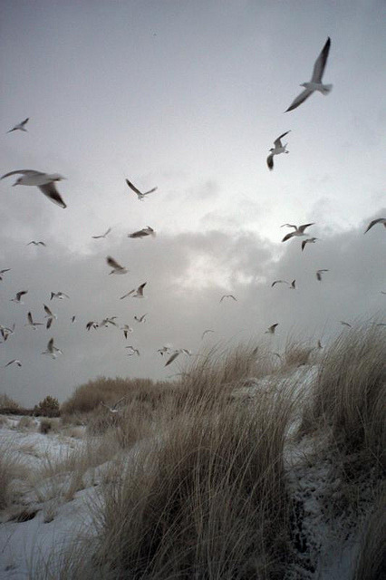

Reklama
Tej, co w raju

| O! Byłaś ty mi wszystkim miła Za czem się duch mój rwie z tęsknicą Zieloną wyspą w morzu, M i ł a! Źródłem, fontanną i świątnicą Osnutą drzew owocnych cieniem. Zdobną w ofiarnych kwiatów zwoje, A wszystkie kwiaty były moje. | Więc, gdy mi wszystkie dni pobladły, Pytam w noc każdą mgieł roztoczy Gdzie? i na jakim cichym brzegu? Płoną dziś twoje czarne oczy? Gdzie? i na jakim świata krańcu? Nad jakich sennych wód topielą? Śnieżne się twoje stopy bielą, Rozchwiane w eterycznym tańcu. |
| Ach! sen zbyt piękny, by trwał długo, Zgasłaś mi gwiazdo bezpowrotnie; Już przyszłość wartką mknącą strugą, Rwie mnie, bym za nią spieszył lotnie Lecz nad przeszłości falą smętną Duch mój, bez ruchu tkwi rozpięty Wpatrzony w toń zatoki mętną, Zmartwiały, bólem zdjęty. | Przekleństwo! srogim wichrom morza Co się z mojego brzegu zwiały. Miłość prowadzi na bezdroża, Do zbrodni wiedzie, lub do chwały. Mnie ach ku mglistej niosąc dali Rzuciła w sennej mar krainie, By słuchać szumu srebrnej fali Co u stóp twoich szemrząc płynie. |
| Zgasła mi jasna światłość żywa I nigdy, nigdy, nigdy już! (Słowo to uroczyście wzywa Zalewną falę na brzeg mórz) Nigdy już pień rozdarty gromem, Młodości wiosną nie odkwitnie, Ni orzeł ranny nad skał złomem Do lotu się zerwie szczytnie. |